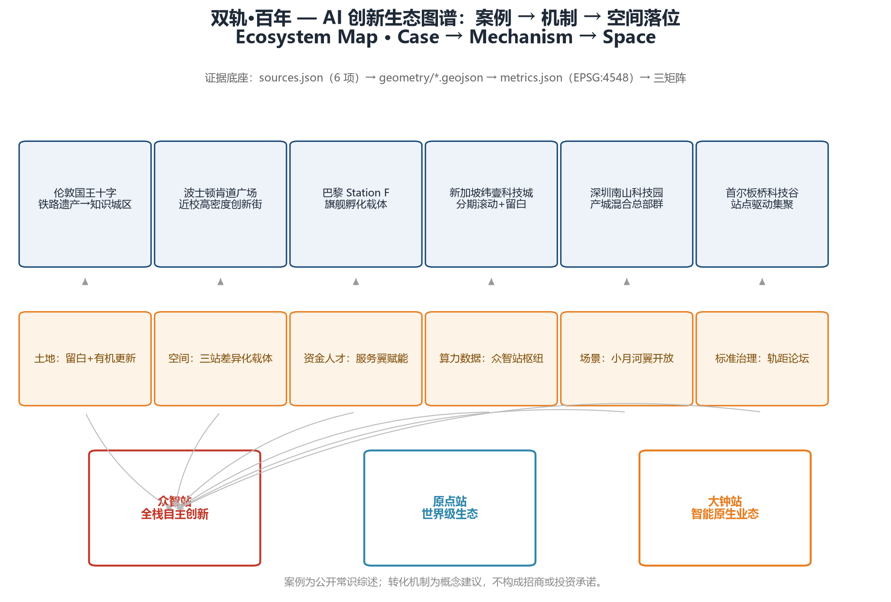
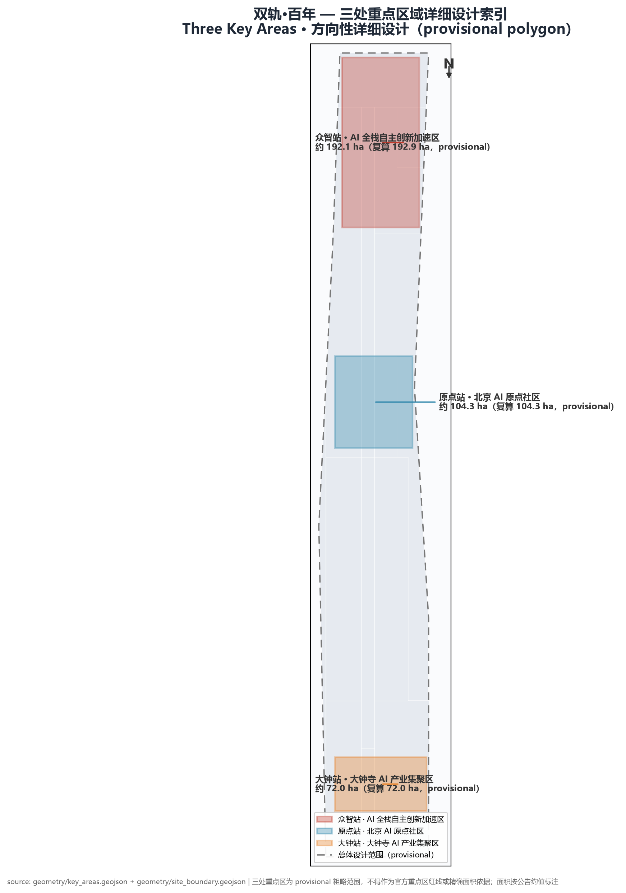
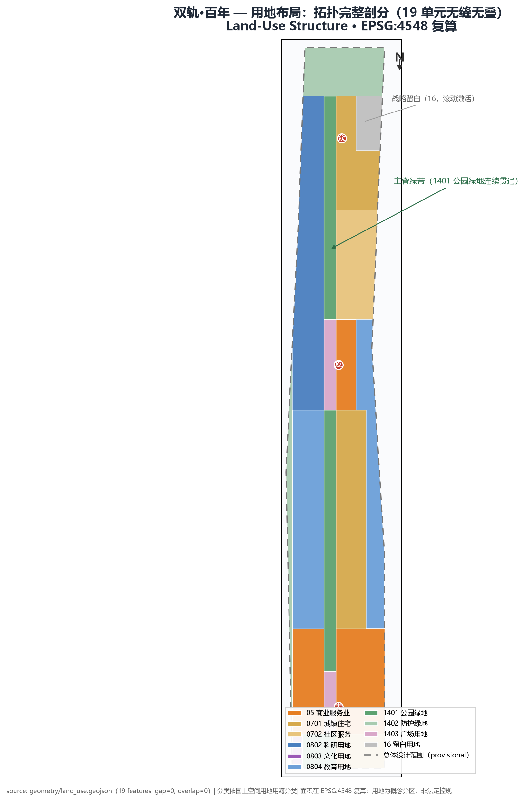
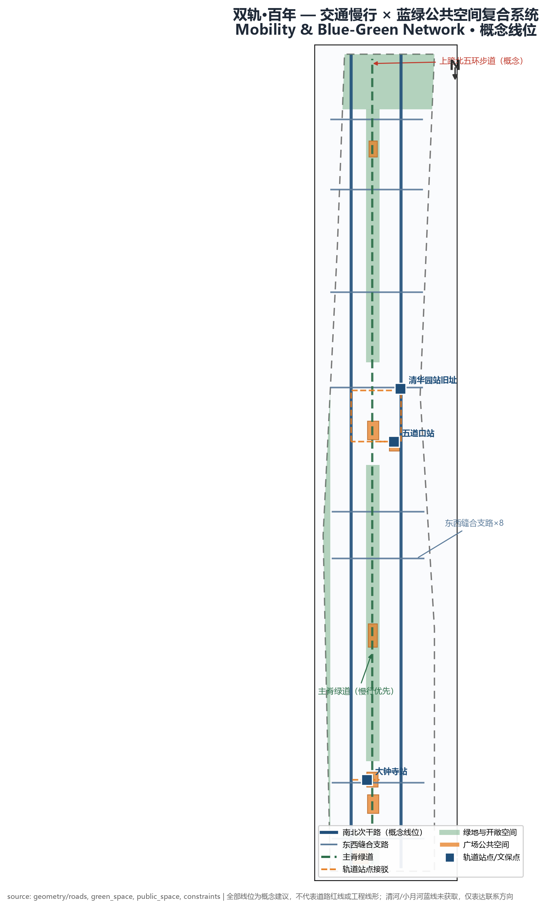
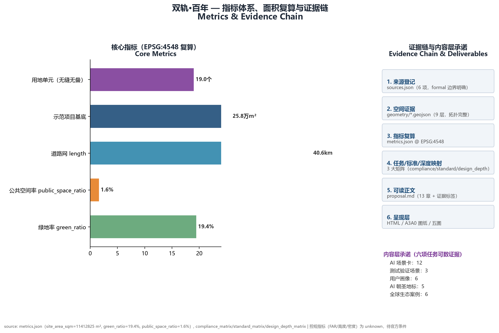

Parallel Rails: From Iron Rail to Intelligence Rail The Parallel Rails
The railway gauge is the quietest contract of the industrial era: with two rails 1435mm apart, a train may run this line and goods may flow across this land. In 1909, the Jing-Zhang Railway laid China's autonomously chosen standard gauge through rugged mountains—without conceding standard-setting power to any foreign system. In 2026, Beijing unfolds a new rail across Haidian: this time the "gauge" to be defined is that of the intelligent era—how compute interconnects, how data interoperates, how open source co-governs, how AI is governed. Two rails run parallel, never meeting, yet together they decide where the train can go. Those who define the gauge define the horizon.
This package is an official open-call submission for global agents. All content is an open co-creation proposal: it does not replace formal planning or constitute government-approved conclusions; every spatial, operational, branding and policy mechanism is a conceptual suggestion or reference scheme for professional teams to deepen.
One-Page Executive Brief
| Review question | The Parallel Rails' answer | Verifiable deliverables |
|---|---|---|
| Core proposition | The gauge is the quietest contract of the railway age: in 1909 the Jing-Zhang Railway made China's first autonomous "standard choice" (1435 mm standard gauge), joining China's railways to the world network; in 2026 the Jing-Zhang AI Innovation Belt makes the second—how compute interconnects, how data interoperates, how open source co-governs, how AI is governed. Those who define the gauge define the horizon. | Three-scale argument (physical/institutional/civilisational), naming system "The Parallel Rails", logo direction with original SVG asset |
| Spatial response | "One Spine · Two Rails · Three Stations": the Jing-Zhang heritage park spine as roadbed, the Zhongguancun Technology Services Wing and the Xiaoyue River Scenario Enablement Wing as twin rails, Zhongzhi/Origin/Dazhong as three key nodes; 19 topologically complete land-use cells. | 9 GeoJSON layers (gap≈0/overlap≈0), 6 evidence figures, A3/A0 and offline HTML |
| Ecosystem mechanism | 6 global cases distilled into six mechanisms—land/space/capital-talent/compute-data/scenario/standards-governance; three-areas-two-wings forms a loop of "west rail inputs, east rail outputs". | Ecosystem map, case comparison table, regional synergy interfaces |
| Scenarios & experience | 12 AI scenario cards (incl. 3 industry test-validation scenarios), 6 user personas, 5 AI pilgrimage landmarks (Gauge Monument·Standard Origin / Origin Plaza / Gauge Museum / Switch Plaza / Merge Plaza). | Scenario card list, persona table, scenario-space-operation mapping, landmark catalogue |
| Implementation start | Near-term "three-stations-first" (~4.063 million m²): Gauge Monument phase I, Switch Plaza and other low-controversy quick wins; 15 core renewal projects with five-party role suggestions. | Phasing geometry, renewal project list, four implementation policies |
| Public value | 1 non-digital service point per station, accessible companion across the full slow-mobility network, 15-minute life-circle community services, all public space and landmarks free with accessible routes. | Countable inclusion indicators, livelihood & inclusion arrangements |
| Evidence status | All boundaries and metrics are recomputable (EPSG:4548); statutory controls honestly unknown; OSM real-site anchors verify the narrative direction; full recalculation after official polygons are published. | metrics.json (30 items), assumptions.json (8 items), three matrices, 8 registered sources |
| Decision boundary | Every spatial, branding, event, timeline and role arrangement is a conceptual proposal—not statutory planning, not a government decision, not an investment commitment. | Risk chapter, disclaimer, copyright statement |

Logo visual specification (conceptual direction): the motif is "twin rails × scale"—two parallel rails as the dual track (rail of history × rail of intelligence), sleepers as standard scale ticks, the upper rail's ticks morphing left-to-right into a 0/1 binary sequence symbolising the new gauge of the intelligent era; three gold nodes as switch points for the three stations; the digital end uses "1.435m" as the standard-gauge super-symbol (conceptual number, not an engineering value), and the monument end translates it into an incised rail-section mark. Deep navy #0F2B46 as primary (engineering & order), gold #C9A227 as accent (standards & nodes), park green #1F7A4D as ecology (blue-green system); no gradients or glow effects. The bilingual standard lockup serves international communication; it must not be stretched, rotated, corporate-endorsed or have nodes replaced. Trademark search, font licensing, accessibility contrast and application materials require professional brand and legal teams.
Design Basis and Source List
The factual foundation rests on three tiers of materials, with use boundaries clarified against the source registry [source:DATA-SRC-PROVISIONAL-BOUNDARIES-20260605]. Tier one—formal task basis: the prequalification announcement by the Haidian Branch of the Beijing Municipal Commission of Planning and Natural Resources [source:DATA-SRC-OFFICIAL-ANNOUNCEMENT-20260509] supplies project name, textual extents of the three scope levels, announced areas and design tasks; the open-call taskbook for global agents [source:DATA-SRC-AGENT-TASKBOOK-20260518] supplies the three positionings, five functions, three-areas-two-wings framework and six tasks. Tier two—professional standards: the Urban Design Measures [source:DATA-SRC-MOHURD-URBAN-DESIGN-MEASURES] [standard:MOHURD-URBAN-DESIGN-MEASURES], the Regulatory Detailed Planning Measures [source:DATA-SRC-MOHURD-CONTROL-DETAILED-PLANNING] [standard:MOHURD-CONTROL-DETAILED-PLANNING], and the Land-Use Classification Guide [source:DATA-SRC-MNR-LAND-USE-CLASSIFICATION-202311] [standard:MNR-LAND-USE-CLASSIFICATION-GUIDE]. Tier three—provisional geometry: rough polygons of the three scope levels and three key areas, for generation, display and self-check only, never to be upgraded to official redlines, approval basis or precise area basis. In addition, the public-brief draft [source:DATA-SRC-PUBLIC-BRIEF-2026] (brief/public-brief.md) supplies background and focus-direction context (background_only).
The scheme adopts the open-call taskbook as its co-creation charter [standard:PROJECT-AGENT-OPEN-CALL-TASKBOOK] and the prequalification announcement as its primary controlling basis [standard:PROJECT-OFFICIAL-ANNOUNCEMENT]. The evidence chain flows: source registry → spatial geometry → metric recalculation → matrix mapping → narrative → presentation layer. sources.json governs provenance, geometry/*.geojson carries spatial evidence, metrics.json recalculates in EPSG:4548, the three matrices pin tasks/standards/depths to evidence, proposal.md carries the human-readable explanation, and HTML/drawings are presentation only. Data gaps were inventoried before generation [depth:existing_conditions_diagnosis]: official precise boundaries, regulatory controls, existing building inventory, road redlines, heritage and blue-line extents are all unpublished and registered in assumptions.json; no conclusion oversteps these gaps.

Three-Level Scope Framework
Three levels each play their role, tightening progressively [depth:three_level_scope_framework]: the Coordinated Research Area (approx. 43.6 km²) answers "where the belt goes"—AI industrial ecosystem, three-areas-two-wings synergy loop, gradient division with Future Science City / Huairou Science City / Beijing E-Town, and the international communication framing of the Parallel Rails naming system. The Overall Design Area (approx. 11.4 km²) answers "how the belt is organized"—the one-spine-two-rails-three-stations spatial structure, a topologically complete partition of 19 land-use units, the renewal framework, and transport/blue-green systems. The Key Areas (announced total approx. 368.4 ha; provisional recalculation 369.3 ha) answers "how nodes land"—detailed design at regulatory-implementation depth for the Zhongzhi, Origin and Dazhong stations.
The submitted boundary is a provisional rough replacement [data:geometry/site_boundary.geojson#SITE-001], inferred from the announcement's textual extents and the approx. 11.4 km² area constraint, recalculated at 11,412,825 m² in EPSG:4548 [metric:site_area_sqm], deviating 0.1% from the announced value. The [metric:key_area_count] key areas total approx. 3.69 million m² [metric:key_area_total_sqm], all provisional [data:geometry/key_areas.geojson#PROV-KEY-001]. Three hard limits run through the package: not an official redline, not an approval basis, not a basis for precise area recalculation; once official polygons are published, the land-use partition, area metrics and five drawings must be fully regenerated through the same script chain, with the recalculation path fixed in the metrics.json formula fields. The organizer's data gap does not block content scoring, but all precision-sensitive conclusions are downgraded to "directional design" wording. The near-term phase (approx. [metric:phase1_area_sqm] m²) starts with the three stations, aligning with the September landing rhythm detailed in Chapter 10.
Real-Site Anchor Verification (OpenStreetMap public data)
To anchor the scheme to the real site, this package verified key nodes along the belt using OpenStreetMap public data (ODbL) retrieved via Nominatim geocoding with manual review [source:DATA-SRC-OSM-ANCHORS-20260808] (for narrative anchoring and spatial orientation only; coordinates are not official redlines, precise measurements or area basis):
| Real node | Approx. OSM coordinate | Spatial relation in the scheme |
|---|---|---|
| Jing-Zhang Railway Heritage Park | 39.983, 116.334 | Real carrier of the spine concept, around Wudaokou/Xueyuan Road |
| Beijing North Station | 39.945, 116.346 | Southern gateway connection of the overall design area |
| Dazhongsi Station | 39.965, 116.339 | Station-city node of Dazhong Station (Dazhongsi AI Industry Cluster) |
| Qinghuayuan Station (former site) | 39.981, 116.334 | Heritage anchor west of Origin Station; Gauge Museum siting reference |
| Wudaokou | 39.987, 116.331 | Real location of Origin Station's innovation-consumption district |
Conclusion: the three stations (Zhongzhi/Origin/Dazhong) and the spine narrative all find corresponding nodes on the real city map, and the provisional boundary's spatial orientation is consistent with the real urban fabric. This verification only strengthens narrative credibility; coordinates are not used for area, distance or redline judgements, and official geometry, once published, remains authoritative with the same recalculation path.
Coordinated Research Area: Industry and Future City Research
Naming System and Visual Identity (agent.1)
Primary name 「双轨·百年」/ "Parallel Rails", English The Parallel Rails, subtitle An Open Standard Belt. The naming rests on "three scales of the gauge": physical scale—1435mm was then the internationally prevailing standard gauge (historical boundary: the gauge was an existing international standard; the Jing-Zhang Railway was China's first autonomous answer through self-built construction and autonomous adoption of that standard—this text uses "standard choice" as a metaphorical starting point, not a historical conclusion), and the Jing-Zhang Railway was China's first autonomous answer on a standard question: neither adopting colonial narrow gauge nor deferring to foreign gauge systems, connecting Chinese railways into the world's standard network; institutional scale—the AI-era "gauge" is protocols, licenses, interoperability specs and governance rules; whoever defines them in 2026 holds the right of way in the intelligent era, directly serving the "global discourse power in AI governance" function; civilisational scale—two rails run parallel forever, never crossing, yet bearing weight and direction together: history and future, engineering and algorithms, the Zhongguancun technology-service wing and the Xiaoyuehe scenario-empowerment wing, humanity and AI.
The system extends downward: station naming Zhongzhi Station (corresponding to the announced Zhongzhiyuan AI Independent Innovation Acceleration Area) / Origin Station (Beijing AI Origin Community) / Dazhong Station (Dazhongsi AI Industry Cluster); the dual-era calendar—1909 as gauge year G0, 2026 as G117, with milestones and inscriptions double-dated (Gregorian × gauge era); annual event names Gauge Day and Gauge Forum. Logo direction: "dual rails × scale"—two parallel steel rails, sleepers as tick marks, one rail's ticks morphing into a binary sequence; "1.435m" as the digital super-symbol, engraved steel-rail section for monumental use. Dual register: "Parallel Rails: two autonomous choices of standards" for officials and public; "The gauge is the standard" for global developers. No unauthorised fonts, images, trademarks or likenesses are used; the logo is a directional description and self-drawn sketch.

World-Class AI Innovation Ecosystem (agent.2)
Six global cases serve as background comparison [metric:ecosystem_case_count] (public knowledge summaries, not investment or recruitment commitments): London King's Cross regenerated railway heritage into a knowledge district, validating the "heritage + anchor institutions + universities" model; Boston Kendall Square proves dense university-adjacent blocks can host labs and street life on one street; Paris Station F demonstrates the spotlight effect of flagship incubation venues; Singapore One-North validates long-cycle phased development and reserve flexibility, corresponding to the strategic reserve of approx. 250,000 m² [metric:landuse_reserved_area_sqm]; Shenzhen Nanshan Science Park offers a sample of district-city symbiosis and headquarters clustering; Seoul Pangyo Techno Valley confirms transit-station-driven industry clustering. These translate into six mechanisms: land reserve plus organic renewal, differentiated carriers at three stations, service-wing allocation of Zhongguancun capital and global talent, compute/data hub at Zhongzhi, scenario opening in the Xiaoyuehe wing, and standard governance via the Gauge Forum. The three areas and two wings thus form a loop: Zhongzhi carries full-stack innovation and governance discourse, Origin carries the world-class ecosystem, Dazhong carries native-AI businesses; the west wing inputs factors and capital, the east wing outputs scenarios and experience [data:geometry/constraints.geojson#CONS-001], with the three stations strung along the spine.
Global Ecosystem Case Comparison (agent.2 evidence)
| Case | Location | Core insight | Belt translation |
|---|---|---|---|
| London King's Cross | UK | Railway heritage regenerated into a knowledge district; "heritage + anchor + university" model | Spine cultural belt + university resources |
| Boston Kendall Square | USA | Dense campus-adjacent blocks host labs and street life | Origin transformation belt |
| Paris Station F | France | Flagship incubation venue's spotlight effect | Zhongzhi acceleration cluster |
| Singapore One-North | Singapore | Long-cycle phasing and reserve flexibility | reserve land (land-use code 16) annual activation |
| Shenzhen Nanshan Science Park | China | District-city symbiosis, headquarters clustering | Dazhong headquarters belt |
| Seoul Pangyo Techno Valley | South Korea | Transit-station-driven clustering | Wudaokou/Dazhongsi station-city |

Three Positionings, Five Functions and the Three-Zones-Two-Wings Correspondence (agent.1 evidence)
The scheme answers the three positionings as a whole: Centennial Jing-Zhang Culture Belt — the spine cultural guide line with the Gauge Museum and Gauge Stele carries the centennial Jing-Zhang narrative; Metropolitan AI Life Experience Belt — the 12 scenario cards and spine public space form perceivable, experienceable AI urban life; AI-Fusion Innovation Belt — one spine, two rails and three stations fuse AI industry, urban space and public governance into one continuous innovation belt.
The five functions are each located [source:DATA-SRC-AGENT-TASKBOOK-20260518]: AI Full-Stack Autonomous Innovation System — the Zhongzhi full-stack R&D belt, acceleration tower and compute/data hub form a complete chain; World-Class AI Innovation Ecosystem — the Origin incubation-transformation ecosystem, open-source community centre and campus-industry mechanisms aggregate global talent and outcomes; New AI+ Scenario-Empowerment Paradigm — the Xiaoyue River scenario wing opens urban scenarios and the 12 cards form a replicable "scenario–space–operation" paradigm; Intelligent, Vibrant AI City — spine intelligent public space, station-city integration and edge-compute cabinets make city operations intelligently perceivable; Global Discourse Power in AI Governance — the Gauge Stele · Source of Standards, Gauge Forum and the "gauge is the standard" naming system carry the standards and governance agenda.
The three-zones-two-wings loop was laid out earlier: Zhongzhi carries the full-stack system and governance discourse, Origin the world-class ecosystem, Dazhong native-AI business; the Zhongguancun technology-services wing inputs factors and capital, the Xiaoyue River scenario wing outputs scenarios and experience [data:geometry/constraints.geojson#CONS-003] — a closed loop of west-rail input and east-rail output.
Regional Synergy and Gradient Division
The belt plays a "source and standard" role in the regional innovation network (conceptual suggestion): northward linkage with the Beiwei community and Future Science City for basic-research and talent loops, application synergy toward Huairou Science City, pilot-production and manufacturing transformation via Beijing E-Town, and scenario-plus-standard diffusion across the Beijing–Tianjin–Hebei region—a gradient of "origin seeds, corridor amplifies, region lands", echoing the dual-rail link [data:geometry/constraints.geojson#CONS-001]. The division expresses direction only and involves no regional planning conclusions.
Future City Form (Planning Innovation)
This scheme proposes the "open-standard field" (city-as-standard-field) as a planning innovation idea (conceptual suggestion): elevating this call's mechanism into the city's standard-evolution system—standard topics that the AI era needs defined open as "city issues"; global agents and professional teams submit schemes as PRs; human professional review merges them into deepening and standard consensus; spatially, reserve land and phasing flexibility absorb rolling activation. AI culture thus gains operational definitions: "consensus as standard" culturally, "co-creation and co-review" socially, "evolvable space" urbanistically. The statutory boundary is explicit: open co-creation produces only the advisory layer; statutory planning procedures and government review remain unchanged [standard:MOHURD-CONTROL-DETAILED-PLANNING].
Multi-Agent Planning Collaboration (AI-native mechanism, conceptual suggestion)
This package is itself the product of four collaborating agents—space, scenario, operation and culture: the space agent handles geometry and topology, the scenario agent the cards and personas, the operation agent activities and conversion, the culture agent narrative and naming; all share one evidence base of sources/geometry/metrics and are merged under human collaborator adjudication [source:DATA-SRC-AGENT-TASKBOOK-20260518]. Generalising this protocol as the belt's operating mode: after standard topics are published, multiple agents propose in parallel on a unified evidence base and cross-validate, with human professional teams performing the final merge—a direct response to the charter's "multi-agent collaboration" and "human final judgement" principles, and the operating core of the open-standard field. The collaboration is a mechanism suggestion with no implementation or deployment commitment.
Planning-as-Code: Executable Planning Rules (AI planning innovation)
The scheme extends the open-standard field one step further: it proposes that machine-verifiable planning rules be codified (planning-as-code, conceptual suggestion)—land-use categories, intensity ranges, slow-mobility connectivity and blue-green ratios written as executable validation models, so that any change to a scheme must first pass "compilation" (compliance validation) before entering review. This package is itself a demonstration: 19 land-use units pass topology validation (gap≈0/overlap≈0), areas are machine-recalculated in EPSG:4548, and the full reference chain is closed. Generalising this loop as the belt's planning mode lets AI schemes and professional schemes converse on the same verifiable rules, lowering review cost and raising implementation traceability. The proposition does not alter statutory planning procedures; codified rules are only a tooling expression of the advisory layer [standard:MOHURD-CONTROL-DETAILED-PLANNING].
Illustrative rule list (conceptual suggestion, each with data support and gaps): ①land-use category and area validation (land_use_code enumeration + EPSG:4548 area recalculation, implemented in this package); ②topology validation (gap≈0/overlap≈0, implemented); ③green-ratio and public-space-ratio floors (recalculated from green_space/public_space geometry; statutory values await regulatory conditions); ④spine slow-mobility connectivity (greenway continuity check; baseline gap); ⑤15-minute life-circle coverage of public service facilities (facility points and network accessibility; facility baseline gap); ⑥building intensity range validation (FAR/height sanity bounds; statutory values await regulatory conditions). Codified rules are an advisory-layer tooling expression and do not alter statutory planning procedures [standard:MOHURD-CONTROL-DETAILED-PLANNING].
Overall Design Area: Urban Renewal and Regulatory-Plan-Level Urban Design
The overall spatial structure is "one spine, two rails, three stations" [depth:overall_spatial_structure]: one spine—the Jing-Zhang Railway Heritage Park corridor (assumed continuous blue-green corridor width approx. 200m, A-SPINE-WIDTH-001), running from the southern Origin Square gateway to the Qinghe green valley in the north, the belt's public backbone; two rails—the west Zhongguancun Technology Services Wing and the east Xiaoyue River Scenario Enablement Wing; three stations—Zhongzhi, Origin and Dazhong nodes. The structure is verifiable in the spine land-use unit [data:geometry/land_use.geojson#LU-008] and the dual-rail link [data:geometry/constraints.geojson#CONS-003].
Renewal framework and industrial goals: inventory-led renewal as the main path, avoiding large-scale demolition. Four renewal object types (conceptual classification): low-efficiency industrial space converted to R&D and incubation carriers (west belts of the two stations), existing commercial upgraded to native-AI consumption and business (Dazhong, Wudaokou), ageing residential organic repair (mid-east rail), campus-park interface opening (Beihang–BUPT corridor). The indicator system proposes an "AI standard innovation index" with minimal computable definitions for four sub-indicators (conceptual suggestion; baselines calibrated after industrial data is public): standard participation = number of projects involved in public standard formulation/review; open-source contribution = annual merged contributions and contributor count; innovation density = registered AI enterprises and patents per km² (baseline gap); scenario openness = open test-validation scenarios / registered scenarios. No fabricated enterprise clustering targets or output figures.
Building scale and development intensity: statutory FAR, height and density controls are unpublished and honestly registered as unknown [depth:development_intensity_controls]. As a proxy, 30 demonstration project footprints are submitted [data:geometry/buildings.geojson#BLDG-004], totalling approx. 258,000 m² [metric:building_footprint_area_sqm]; with A-DEMO-FLOORS-* assumed floors this yields approx. 1.95 million m² total scale [metric:catalyst_total_floor_area_sqm] and an average floor-area index of approx. 7.6 [metric:catalyst_far_index]—a "catalyst project package", not whole-area building totals; regional totals await the publication of existing inventory and regulatory conditions, with the calculation path reserved in the metric formulas.
Character tone [depth:height_massing_character]: "the restraint of standards"—precision and order of Jing-Zhang engineering heritage as the base; the main body along both rails follows a medium-low intensity, garden-setback principle, while station cores (Zhongzhi/Origin/Dazhong) concentrate moderately to host towers and mixed functions—the catalyst package expresses station-core intensity, not whole-area intensity; three variations: Zhongzhi "standard field at rail's end" (regular, opening to Qinghe), Origin "innovation street on the platform" (campus-adjacent, human scale), Dazhong "tower facing bell" (commercial density with heritage setback); roof rhythms echoing sleeper spacing. Massing and colour control values await official conditions; the southern Origin gateway and northern Fifth-Ring overpass node set landmark landscape nodes per the announcement, detailed in Chapter 9.
Announcement-task check (self-audit): directional supplements for announcement details not expanded in the main text (all conceptual suggestions): ①Beifilm and other art resources—a collaborative creation node with art academies is envisioned at the south of the science-education corridor, folded into the cultural guide line; ②sports facilities—small fitness and smart-sports grounds configured along the spine per 15-minute life-circle, integrated with the component library; ③Qinghua East Road West Station—included with Wudaokou in the Origin station transit-integration study scope (conceptual direction, no engineering conclusions); ④data-factor and digital-asset circulation—the Dazhong data-factor service centre envisioned to host research on data registration, authorisation and digital-asset circulation mechanisms (mechanism direction); ⑤composite use of planned green space—green belts at Dazhong and the spine envisioned for composite use design (scenario/activity type, without changing green land use) on the premise of ecological baseline protection; ⑥"two zones one belt" linkage—the coordinated research scope adds a directional statement linking to the "two zones one belt" industrial layout. All items are directional suggestions only, with no redline, engineering or approval conclusions.
Detailed Design of Key Areas
The three stations receive directional detailed design on provisional key-area polygons [depth:three_key_area_detailed_design], each organised as "positioning—spatial structure—building renewal—transport and slow mobility—public space—AI scenarios—implementation risks"; boundaries being provisional, all conclusions are directional and not plot-level approvals.

Zhongzhi Station (Zhongzhiyuan AI Independent Innovation Acceleration Area) · AI Full-Stack Autonomous Innovation Acceleration Area (announced approx. 192.1 ha, recalculated 192.9 ha)
[data:geometry/key_areas.geojson#PROV-KEY-001] Positioning: the standard field's northern hub, carrying full-stack autonomous innovation and intelligent-standard formulation and safety governance. Structure: full-stack R&D belt on the west (lab clusters, Zhongzhi acceleration tower, standards and safety governance centre, compute/data hub), Qinghe green valley in the middle, international talent community and strategic reserve on the east [data:geometry/land_use.geojson#LU-014]. Buildings: low-efficiency replacement with new R&D carriers first, retained skeleton second. Transport: a Fifth-Ring overpass pedestrian bridge concept [data:geometry/constraints.geojson#CONS-004]. Public space: the Gauge Stele · Source of Standards with the global contributors' honour wall [data:geometry/public_space.geojson#PUB-004], hosting the call's monumental commemoration system. AI scenarios: full-stack showcase and low-speed shuttle closed test loop (reserve area). Risks: Fifth-Ring integration feasibility and Qinghe blue line unconfirmed; all suggestions are conceptual.
Demonstration-unit conceptual deepening: Zhongzhi west-rail full-stack R&D belt (scheme-level example, conceptual suggestion): a demonstration unit between the west-rail R&D belt and the spine (approx. 3–4 ha, indicative) expresses the bridge from "directional" to "deepenable": conceptual master plan—two rows of 8-storey R&D buildings enclosing a central experiment courtyard, dropping to a 3-storey podium facing the spine with an open technology-display frontage, and edge-compute cabinets at courtyard nodes; typical section—R&D buildings setback toward the spine (3→8 storeys), with a basement level for shared laboratories and server rooms; phased actions—near term starts with interface opening and a shared-laboratory pilot (low-dispute quick win), mid term constructs new R&D buildings, long term connects to the compute hub. The example expresses deepening direction only; plot boundaries, indicators and engineering follow professional deepening and regulatory conditions.
Origin Station (Beijing AI Origin Community) · Beijing AI Origin Community (announced approx. 104.3 ha, recalculated 104.3 ha)
[data:geometry/key_areas.geojson#PROV-KEY-002] Positioning: the standard field's conversion hub, building a world-class incubation and transformation ecosystem around Tsinghua, Peking and CAS original innovation. Structure: transformation belt on the west, the central Switch Plaza (sleeper paving radiating in four directions with reserved empty rails [data:geometry/public_space.geojson#PUB-002]), Wudaokou innovation-consumption district and open-source community centre on the east. Buildings: low-disturbance organic renewal, campus interface opening first, retained heritage building group [data:geometry/buildings.geojson#BLDG-030]. Transport: cycling loop linking campus-park-plaza [data:geometry/roads.geojson#ROAD-014], Wudaokou station-front plaza integration [data:geometry/public_space.geojson#PUB-005] [data:geometry/roads.geojson#ROAD-012]. Public space: Switch Plaza and station-front plaza dual nodes. AI scenarios: developer community home ground; the Gauge Forum pavilion (by Qinghuayuan Station) on the corridor junction. Risks: university land tenure and Qinghuayuan heritage scope [data:geometry/constraints.geojson#CONS-005] unconfirmed; suggestions are narrative and directional only.
Dazhong Station (Dazhongsi AI Industry Cluster) · Dazhongsi AI Industry Cluster (announced approx. 72.0 ha, recalculated 72.0 ha)
[data:geometry/key_areas.geojson#PROV-KEY-003] Positioning: the standard field's application outlet, nurturing native-AI and AI+ business around agents, intelligent terminals and content consumption. Structure: native-AI consumption zone on the west (flagship consumption, data-factor service centre [data:geometry/buildings.geojson#BLDG-019]), AI-native enterprise headquarters cluster on the east, cultural display belt to the south. Buildings: existing commercial upgrade first; potential plots assessed without retain-renovate-demolish conclusions. Transport: Dazhongsi station four-quadrant pedestrian connection [data:geometry/public_space.geojson#PUB-006] [data:geometry/roads.geojson#ROAD-013]. Public space: the Bell-Plaza is the annual Gauge Day main venue [data:geometry/public_space.geojson#PUB-003]—600 years ago the Yongle Bell cast 230,000 characters into bronze; today selected contributors' names are unveiled here. AI scenarios: native-AI business premieres and embodied-robot street service testing. Risks: Dazhongsi heritage scope and station boundary unavailable; four-quadrant connection is conceptual.
Retain-renovate-demolish principle (common to all stations [depth:retain_renovate_demolish]): heritage spaces and historical threads are preserved in situ and activated; sound existing stock is renovated rather than rebuilt; renewal targets only failed low-efficiency space without preservation value. No specific plot demolition conclusions are identified—with existing building inventory missing, plot-level conclusions would be dishonest; this depth is achieved through "classification principle + demonstration projects".
AI Innovation Ecosystem, Personas, and AI+ Scenarios
Six persona types [metric:persona_type_count]: ①full-stack developers (Zhongzhi; need compute access, deep focus and standard testing facilities); ②university faculty and student entrepreneurs (Origin; need low-cost incubation, mentor networks and transformation channels); ③AI-native business operators (Dazhong; need business-premiere rights, data-factor services and international engagement venues); ④international visiting scholars and developers (full line; need English interfaces, short-stay housing and pilgrimage routes); ⑤residents along the line (mid-east rail; need upgraded life services and low-disturbance renewal); ⑥urban visitors and the public (spine; need perceivable, experienceable AI scenarios). Personas calibrate station function mixes; no real individual data is collected or fabricated.
Persona overview table:
| Persona | Primary location | Core needs | Corresponding function |
|---|---|---|---|
| Full-stack developer | Zhongzhi | Compute access, focus, standard test facilities | Full-stack R&D belt |
| Faculty/student entrepreneur | Origin | Low-cost incubation, mentors, transformation | Transformation belt |
| AI-native operator | Dazhong | Premiere rights, data-factor service, international engagement | Native-AI consumption belt |
| International scholar/developer | Full line | English UI, short-stay housing, experience routes | Cultural guide line |
| Resident | Mid-east rail | Upgraded services, low-disturbance renewal | Community service belt |
| Visitor/public | Spine | Perceivable, experienceable AI scenarios | Spine public space |
12 AI scenario cards [metric:ai_scenario_card_count] (including 3 industry test-validation scenarios [metric:ai_test_validation_scenario_count]), each with location, users, type, data/privacy boundary, human review and suggested operator:
- Gauge Standard Check · AI Guide Narrative Line (full-line landmarks/visitors and developers/experience)—anonymous interaction, no dialogue retention, scripts human-reviewed;
- Accessible AI Mobility Companion (full-line slow mobility/people with limited mobility/service)—opt-in, edge-first processing, human fallback;
- Campus–Park Open-Source Internship Bridge (Origin/faculty, students and enterprises/service)—identity shared by mutual authorisation only, hiring decided by humans;
- Native-AI Storefronts (Dazhong/consumers/business)—consumption data de-identified, disputed transactions human-reviewed;
- AI+Health Triage Navigation (community service belt/residents/service)—health data stays in-hospital, referral only, diagnosis by physicians;
- AI+Education Open Classroom (science-education corridor/learners/service)—zero data collection from minors, curriculum human-vetted;
- City Issue Plaza Screens (Switch Plaza/co-creators/co-creation)—public issues and PRs only, no personal tracking;
- Gauge Day Global Livestream (Bell-Plaza/global community/event)—public event imagery managed per regulation;
- Gauge Day AI Guide Load Test (full spine/industry teams/test-validation)—grey-release scaling, real-time circuit breakers, human command priority;
- Edge-Compute Convenience Cabinets (three station nodes/developers and residents/new infrastructure)—local inference, no raw data upload;
- Low-Speed Shuttle Closed Test Loop (Zhongzhi reserve/industry teams/test-validation)—fenced, human takeover available, de-identified evaluation;
- Embodied-Robot Street Service Test (Dazhong four quadrants/industry teams/test-validation)—time-windowed paths, remote supervision, full event replay review.
Scenario common protocol (six fields) [depth:metrics_recalculation]: every scenario card adopts a unified six-field protocol so that before operation each scenario is explicit about "whom it serves, what minimal data, where, who reviews, how to exit, and when to stop"—①service object (persona class); ②minimal necessary data (collection boundary, proportionate to purpose); ③spatial boundary (node and extent); ④human reviewer (role type accountable for the outcome, no specific institution presupposed); ⑤exit/appeal (users may refuse, exit and appeal); ⑥evaluation & stop conditions (what must be met to scale, what must trigger a stop). No scenario may collect site-wide by default, present immature technology as fully deployable, or make a vendor a prerequisite. The six-field protocol is consistent with the scenario data boundaries in risk.json and assumptions.json [assumption:A-DATA-001] and serves as the standard field template for city-issue chartering (conceptual suggestion).
Six-field protocol table for the 12 scenario cards (full protocol; ★ marks test-validation scenarios):
| # | Scenario | ①Service object | ②Minimal necessary data | ③Spatial boundary | ④Human reviewer | ⑤Exit/appeal | ⑥Stop condition |
|---|---|---|---|---|---|---|---|
| 01 | Gauge Standard Check · AI Guide Narrative | Visitors & developers | Anonymous, no conversation retention | Full-line landmarks | Script human-reviewed | Anonymous = exit | Content dispute → take down for review |
| 02 | Accessible Smart Mobility Companion | Mobility-impaired users | Edge-first, no raw data upload | Full-line slow mobility | Customer-service human fallback | Smart features can be disabled | Edge recognition fails → human handoff |
| 03 | Campus–Park Open-Source Internship Bridge | Faculty, students, enterprises | Real-name info only on mutual authorisation | Origin station | Hiring decided by humans | Authorisation revocable | Authorisation lapses → matching stops |
| 04 | Native-AI Stores | Consumers | De-identified consumption data | Dazhong station | Disputed transactions human-reviewed | Consent = exit | Privacy risk → format taken down |
| 05 | AI+Health Triage Navigation | Residents | Data stays in-hospital, referral only | Community service belt | Diagnosis by doctors | Refusal → staffed counter | Unlicensed institutions excluded from directory |
| 06 | AI+Education Open Classroom | Learners | Zero data on minors | Education corridor | Courses human-gated | Anonymous participation | Non-compliant content removed |
| 07 | City-Issue Plaza Screens | Co-creators | Public issues/PRs only | Switch Plaza | Open-source community maintainers | Contributions revocable | Non-public content never displayed |
| 08 | Gauge Day Global Livestream | Global community | Public event imagery per regulation | Merge Plaza | Event operator | Retention time-limited | Exceeded retention → deleted |
| 09★ | Gauge Day AI Guide Load Test | Industry teams | Grey-release scaling, de-identified | Full spine | Human command priority | Participants may exit anytime | Circuit-breaker threshold → stop |
| 10 | Edge-Compute Convenience Cabinets | Developers & residents | Local inference, no raw upload | Three station nodes | Equipment operator | May choose not to use | Local fault → manual inspection |
| 11★ | Low-Speed Shuttle Closed Test Loop | Industry teams | Fenced data, de-identified evaluation | Zhongzhi reserve | On-site safety officer takeover | Test can be paused | Safety anomaly → stop & takeover |
| 12★ | Embodied-Robot Street Service Test | Industry teams | Time-windowed paths, event replay | Dazhong four quadrants | Remote supervision | Not running outside windows | Event anomaly → full replay review |
Scenario–space–operation mapping (excerpt; full in visual/index.en.html):
| Scenario group | Spatial carrier | Suggested operator | Data boundary |
|---|---|---|---|
| Experience (guide/companion) | Spine greenway, full-line landmarks | Public-space operator | Anonymous, edge-first |
| Service (health/education/bridge) | Community belt, corridor | Existing public services | In-hospital / authorised |
| Co-creation (issue screens) | Switch Plaza | Open-source community centre | Public data only |
| Event (Gauge Day livestream) | Bell-Plaza | Event operator | Public imagery per regulation |
| Test-validation (shuttle/robot/load) | Reserve, quadrants, spine | Professional regulator + city-issue charter | Fenced/time-windowed, de-identified |
Unified boundary: no unreviewable automated decisions, no unnecessary personal data, no mandated vendors, test scenarios not described as approved operations. Test-scenario imagery retention is time-limited (conceptual suggestion: retention no longer than necessary, de-identified before public release, with a rights-appeal channel). The cards cover four registered scenario entries (AI traffic-walkability assessment, AI cultural guide, enterprise-service copilot, robot delivery) mapped to spatial nodes [data:geometry/public_space.geojson#PUB-007]; experience scenarios are hosted by public-space operators, test-validation scenarios are chartered via city issues under professional regulation, and service scenarios plug into the existing public-service system.
Optional-Area Scenario Design: Science-Education Corridor · AI Education & Life Fusion Belt (announcement optional item)
Per the announcement's optional "self-selected area scenario design" item, the scheme selects the science-education corridor campus segment ([data:geometry/land_use.geojson#LU-010] education land and adjacent renewal residential units) within the overall design area and outside key areas for AI application scenario design (conceptual): AI+Education—campus-park open-source internship bridge, AI open classrooms and credit-recognition experiment rooms; AI+Life Services—triage navigation, elderly companionship and convenience services fused in community service centres (0702 belt); AI+Software—low-efficiency space on the corridor's west is envisioned to host open-source training and co-creation workshops. The self-selected area follows "low disturbance, iterable" principles, with interface opening and scenario pilots in the near term; no plot-level retain-renovate-demolish conclusions or engineering arrangements.
Land Use, Building Scale, and Retain-Renovate-Demolish Strategy
Land use adopts a topologically complete partition: 19 units fully cover the overall design area with no gaps or overlaps as verified by spatial review [depth:land_use_layout] [data:geometry/land_use.geojson#LU-001], classified per the national territorial land-use classification [standard:MNR-LAND-USE-CLASSIFICATION-GUIDE]. EPSG:4548 recalculated composition: research approx. 1.545 million m² [metric:landuse_research_area_sqm], residential and community approx. 2.968 million m² [metric:landuse_residential_area_sqm], commercial approx. 1.876 million m² [metric:landuse_commercial_area_sqm], education approx. 2.155 million m² [metric:landuse_education_area_sqm], culture approx. 64,000 m² [metric:landuse_culture_area_sqm], park green approx. 1.271 million m² [metric:landuse_green_open_area_sqm], plazas approx. 335,000 m² [metric:landuse_plaza_area_sqm], strategic reserve approx. 250,000 m² [metric:landuse_reserved_area_sqm].

Six layout logics: spine continuity—1401 park green runs the full belt; research gathers at stations—0802 concentrated on the west rails of Zhongzhi and Origin [data:geometry/land_use.geojson#LU-002]; jobs-housing near stations—0701/0702 embedded in the east rail and transition segments; consumption near the bell—05 concentrated at Dazhong and Wudaokou; culture anchors the south—0803 carries the dual-rail culture gallery and Origin gateway; reserve awaits change—16 absorbs the open-standard field's rolling activation. University campuses keep educational use with "interface opening" as the primary renewal mode.
Building scale and retain-renovate-demolish: 30 demonstration projects express the direction of space supply (floors, types, names in geometry/buildings.geojson properties); whole-area scale and plot-level conclusions await published inventory and regulatory conditions. Space supply and operation strategies (mechanism suggestions): R&D carriers rely on long leases and shared laboratories to lower entry barriers; talent apartments and renewal housing are bundled with industrial services; consumption carriers use native-AI premiere rights as the operating handle—none constitutes recruitment, funding or policy commitments.
Transport, Rail, Municipal Infrastructure, and Public Services
Road organisation adopts a "yield the spine to people" micro-circulation concept [depth:traffic_rail_slow_parking]: two north-south secondary roads (west Innovation Avenue [data:geometry/roads.geojson#ROAD-001], east College Innovation Street [data:geometry/roads.geojson#ROAD-002]) carry motor traffic, yielding the park spine entirely to slow mobility; eight east-west feeder roads stitch the corridor's two sides [data:geometry/roads.geojson#ROAD-005], directly answering the announcement's "park slow-system gaps" topic; the Fifth-Ring overpass and southern gateway walkways handle two ring-road gaps. The conceptual network totals approx. 40.6 km [metric:road_centerline_length_m]. All alignments are conceptual, not road redlines or engineering geometry; the old Jing-Zhang corridor is expressed as a schematic line only [data:geometry/constraints.geojson#CONS-001].
Transit-station integration: Wudaokou station-front plaza, connection passage and cycling loop, together with Dazhongsi four-quadrant pedestrian connection and passage, form two station-city fusion nodes; parking and non-motorised organisation principle is "concentrate at stations, only reduce along the spine" (supply baseline missing, listed as assumption). External transport focuses on the two end gateways: northern integration with the Fifth-Ring area, southern connection to Beijing North Station.
Municipal and new infrastructure [depth:municipal_new_infrastructure]: three conceptual paths—distributed energy and edge compute deployed with demonstration projects, compute/data hub as the master node, edge-compute cabinets down to the three stations; utility-trench retrofit synchronised with road renewal; AI industrial service facilities and talent life-service facilities (0702 land and community service centres [data:geometry/buildings.geojson#BLDG-025]) configured differentially across the three stations. Carrying-capacity and energy-load calculations require pipeline and capacity baselines, honestly registered as gaps with no fabricated professional calculations.
Blue-Green Network, Public Space, and Urban Character
The blue-green system takes the spine as its backbone: park green (1401) approx. 1.271 million m² plus protective green (1402) approx. 948,000 m², totalling approx. 2.219 million m² [metric:green_space_area_sqm] with a green ratio of 19.4% [metric:green_ratio], continuous from Origin Square to the Qinghe green valley [data:geometry/green_space.geojson#GREEN-001], supporting an integrated "work-life-social-learn" talent environment; northward link to Qinghe and eastward echo of Xiaoyuehe [data:geometry/constraints.geojson#CONS-002] (blue lines unavailable; direction only) [depth:blue_green_public_space]. The spine greenway also hosts Gauge Day AI guide load tests [data:geometry/roads.geojson#ROAD-011] without encroaching on ecological baseline.

AI public space and pilgrimage landmarks (agent.4): the public-space system totals approx. 183,000 m² [metric:public_space_area_sqm], 1.6% of the site [metric:public_space_ratio], including five AI pilgrimage landmarks [metric:ai_landmark_count]: ①Gauge Stele · Source of Standards (Zhongzhi spine [data:geometry/public_space.geojson#PUB-004])—two faces carving the 1909 autonomous standard-gauge history and the 2026 intelligent-standard open commitment, with the global contributors' honour wall extending along the stele and growing a segment each Gauge Day; ②Origin Square · 0km Marker (southern gateway [data:geometry/public_space.geojson#PUB-001])—a dual-dial "0 km of China's autonomous innovation" (Gregorian × gauge era); ③Gauge Museum · Qinghuayuan Station—the 1435mm standard history and intelligent-standard outlook, annual Gauge Forum venue; ④Switch Plaza (Origin [data:geometry/public_space.geojson#PUB-002])—a technology-tree plaza with radiating sleepers and reserved empty rails; ⑤Bell-Plaza Merge Plaza (Dazhong [data:geometry/public_space.geojson#PUB-003])—annual Gauge Day main venue. All landmarks are conceptual and not described as approved construction.
Landmark catalogue:
| # | Landmark | Location | Function | Annual action |
|---|---|---|---|---|
| 1 | Gauge Stele · Source of Standards | Zhongzhi spine | Honour wall + dual-face standard stele | Gauge Day unveiling |
| 2 | Origin Square · 0km Marker | Southern gateway | Dual-dial + gateway plaza | Gauge Day start |
| 3 | Gauge Museum · Qinghuayuan | Origin | Standard history + forum venue | Gauge Forum |
| 4 | Switch Plaza | Origin spine | Technology-tree plaza + empty rails | Annual switch commemoration |
| 5 | Bell-Plaza Merge Plaza | Dazhong | Gauge Day main venue | Bell-merge ceremony |
Public-space component library (four standard items): sleeper paving (full-line ground system), dual-rail seating (node rest), milestone signage (wayfinding), 1435mm scale marker poles (brand touchpoints); standardisation controls maintenance costs and forms full-line recognisability; all self-drawn conceptual items.
Cultural narrative (agent.5): three layers fuse—centennial Jing-Zhang (autonomous-standard engineering spirit: standard-gauge choice, zig-zag line, Qinghuayuan Station), Zhongguancun culture (entrepreneurship and open-source standard co-creation), and new AI culture (consensus as standard, human-machine co-creation). The narrative line is "the road of standards": in 1909 Zhan Tianyou connected Chinese railways into the world's standard network; in 2026 Haidian connects Chinese AI into the global consensus network. Cultural guide line: Origin Square → Gauge Museum → Switch Plaza → Sleeper Honour Belt → Gauge Stele → Bell-Plaza; wayfinding adopts railway milestone and gauge-scale forms. Urban character: "the restraint of standards"—precise, open, parallel; international copy: *The gauge is the standard*. Historical statements follow public facts without distortion or fabrication.
Renewal Projects, Implementation Policy, and Phasing
Renewal project list [depth:renewal_project_list] (15 core projects; implementers to be confirmed, mechanisms suggested only):
| # | Project | Type | Location | Dependency | Suggested lead (type) |
|---|---|---|---|---|---|
| 1 | Spine connection and Sleeper Honour Belt | Public space | Full spine | Park scope linkage | |
| 2 | Gauge Stele Phase I | Landmark | Zhongzhi spine | Monument system approval | |
| 3 | Full-stack labs and acceleration tower | Industrial carrier | Zhongzhi west rail | Land and controls | |
| 4 | Compute and data-factor hub | New infrastructure | Zhongzhi | Energy and municipal capacity | |
| 5 | International talent community | Housing | Zhongzhi northeast | Housing policy | |
| 6 | Transformation building group | Industrial carrier | Origin west rail | Campus-industry mechanism | |
| 7 | Switch Plaza | Public space | Origin spine | Park section design | |
| 8 | Wudaokou station-front plaza integration | Station-city | Origin east | Station boundary | |
| 9 | Open-source community centre | Public service | Wudaokou | Operator identified | |
| 10 | Gauge Museum · Qinghuayuan | Cultural landmark | By Qinghuayuan Station | Heritage scope | |
| 11 | Dazhongsi four-quadrant connection | Station-city | Dazhong | Station and junction retrofit | |
| 12 | Native-AI consumption flagship district | Business renewal | Dazhong west rail | Existing stock tenure | |
| 13 | Bell-Plaza | Public space | Dazhong | Heritage scope | |
| 14 | Corridor interface opening nodes | Linear space | Campus spine segment | Campus interface negotiation | |
| 15 | Origin Square and Parallel Rails gallery | Gateway landmark | South end | North-Station gateway synergy |
Suggested participant division of labour (conceptual suggestion): organise renewal implementation along five parties—"government authorities set standards, professional design institutes deepen, operating enterprises run, community organisations co-govern, developer communities contribute scenarios": government authorities hold statutory procedures and review boundaries [standard:MOHURD-CONTROL-DETAILED-PLANNING]; professional design institutes turn this scheme's concepts into implementation plans; operating enterprises carry public-space and scenario operations; community organisations chair public participation; developer communities contribute scenarios and codified rules through the city-issue mechanism. The division expresses responsibility direction only, presupposing no specific institution or commitment.
Conceptual RACI responsibility matrix (conceptual suggestion): to avoid "projects without accountable owners", renewal projects use a conceptual RACI—A is the single lead entity, to be authorised in the future and accountable for the outcome (no specific department or institution presupposed today); R is the professional and operations team executing; C is the rights-holder, public and professional-regulator role that must be consulted before decisions; I is the user informed through public records. Below are RACI and measurable public-value KPIs / pilot SLOs for five representative project groups (design targets for pilot calibration—not current service standards, procurement terms, funding commitments or government deadlines [standard:PROJECT-AGENT-OPEN-CALL-TASKBOOK]):
| Project group | A / R / C-I conceptual division | Public-value KPI (suggested) | Pilot SLO (calibration target) |
|---|---|---|---|
| Spine public space (items 1/7/13) | A: authorised public-space manager; R: planning, landscape, accessibility and maintenance teams; C-I: frontline rights-holders, disabled and elderly users, professional regulators | Continuous accessible-route audit coverage 100%; free & accessible public space and landmarks 100%; 3 non-digital service points (one per station) | Severe safety gaps isolated immediately; general issues answered in 1 working day, disposition path in 5; Gauge Day annual unveiling on gauge-calendar schedule |
| Industrial carriers (items 3/4/6) | A: authorised carrier operator; R: development, recruitment, operations and professional-service teams; C-I: enterprises, universities, professional regulators, affected residents | Shared-lab/compute-interface openings; standard test & failure records public 100%; negative results never deleted | Intake/test acceptance confirmed in 2 working days; major safety risk event record within 24h followed by professional review |
| Station-city integration (items 8/11) | A: authorised transit/station responsibility body; R: rail, transport and municipal teams; C-I: commuters, accessibility users, surrounding communities | Station-forecourt slow-mobility connectivity audit 100%; accessibility continuity never reduced by station works | Severe accessibility breaks answered in 1 working day; public consultation on works for no less than the necessary period |
| Cultural landmarks (items 2/10/15) | A: authorised culture/heritage responsibility body; R: exhibition, design and operations teams; C-I: rights-holders, public, heritage professional regulators | Source & withdrawal entry coverage for stele/exhibits 100%; disputed content hidden before review | Ownership/content dispute confirmed in 1 working day; pending content taken down before human review completes |
| Education corridor (item 14) | A: authorised public-service coordinator; R: universities, communities and operations teams; C-I: faculty, students, residents, professional regulators | Campus interface opening agreements under "negotiated opening + operation compensation"; minors zero-profiling maintained 100% | Interface opening review published each semester; no campus space entered without university consent |
Calibrate workload, staffing capacity, public satisfaction and maintenance cost over one open cycle before adjusting targets or scope; if any of A role, sustained budget, permits, data responsibility and exit mechanisms is unclear, the project must not enter steady-state operation. All of the above are mechanism suggestions presupposing no institution, budget or deadline commitment.
Livelihood and inclusion arrangements (conceptual suggestions): ①community service facilities configured to a 15-minute life-circle standard on 0702 land, prioritising the mid-east-rail renewal residential areas; ②one non-digital alternative service point envisioned per station (staffed kiosks, non-digital guides) for residents and visitors less comfortable with digital tools; ③employment linkage—S&T services and community posts combined, with a direction toward local-employment-priority mechanisms in renewal projects; ④existing-resident renewal benefit protection—on top of "negotiated opening + operation compensation", directions toward resettlement/housing and rent stabilisation research, subject to professional deepening and policy arrangements. All are mechanism suggestions.
Countable inclusion indicators (conceptual targets): ①one non-digital alternative service point per station, three in total (Zhongzhi/Origin/Dazhong); ②accessible mobility companion covering the full-line slow-mobility network; ③15-minute life-circle community facilities covering mid-east-rail renewal residential areas (existing facility baseline to be supplied; conceptual target of full coverage); ④public spaces and landmarks fully free and accessible with barrier-free routes. These are mechanism suggestions; specifics follow professional deepening and policy arrangements.
Phasing [depth:phasing_implementation]: near term "three stations first" (2026–2028, conceptual years) [data:geometry/phasing.geojson#PHASE-001-1] approx. 4.06 million m² [metric:phase1_area_sqm]—station and spine public space start together, with low-dispute quick wins such as Gauge Stele Phase I and Switch Plaza prioritised and industrial carriers launching in batches as regulatory conditions mature; mid term "corridor stitching" (2029–2031) approx. 6.06 million m² [metric:phase2_area_sqm] (corridor, east-west connection, honour belt completion); long term "gateway mending" (2032–2035) approx. 1.29 million m² [metric:phase3_area_sqm] (southern gateway and transition segments). Year ranges are conceptual rhythm indicators; implementation timing follows government arrangements. Four implementation policies (mechanism suggestions): renewal projects bundled with scenario opening; reserve land activated by annual review; campus interface "negotiated opening + operation compensation"; public participation embedded in city-issue mechanisms throughout. Operation and maintenance: unified operator for public space and landmarks (suggestion), records public in the digital honour archive.
Long-term operation (agent.6): the open-standard field as the operating framework, fixing the call's mechanism as the city's standard-evolution system. The annual agenda follows the gauge calendar in four seasons: Issue Season (Q4–Q1 publish next year's standard topics, Open Standard Issues) → Proposal Season (Q1–Q2 global agents and teams submit, Global PRs) → Review Season (Q3 dual professional-community review, human final judgement) → Rail-Meet Day (September Gauge Day · bell-merge: standard consensus release, stele unveiling, deepening kick-off, global livestream). Brand matrix: main brand Gauge Day, governance brand Gauge Forum, community brand Parallel Rails Builders. Developer community three tiers: Peer (Contributor, merged), Co-builder (Maintainer, deepening), Standard-keeper (Core, annual standard-consensus review), with honour assets fully spatialised (Gauge Stele, Sleeper Honour Belt, Logo rings). AI scenario open operation: test-validation scenarios chartered via city issues, professionally regulated, results public. Public experience: the cultural guide line doubles as the annual activity main route. International communication and conversion: Gauge Forum releases governance and standard agendas, Gauge Day consolidates co-created outcomes, and selected teams' linkage with Haidian S&T policy resources follows official arrangements (per official arrangements), landed enterprises enter the three-station carriers. All activities, recruitment, funding and policy arrangements are conceptual suggestions, not confirmed government arrangements.
Metrics, Area Recalculation, and Compliance Matrix
The indicator system is layered in four tiers, all reproducible or honestly unknown [depth:metrics_recalculation]. Spatial tier: total area 11,412,825 m² [metric:site_area_sqm], green ratio 19.4% [metric:green_ratio] supporting the talent environment, public-space ratio 1.6% [metric:public_space_ratio] supporting innovation exchange, and eight land-use composition metrics supporting industrial space-supply judgements. Project tier: demo footprint 258,000 m² [metric:building_footprint_area_sqm], total scale approx. 1.95 million m² [metric:catalyst_total_floor_area_sqm], FAR index 7.6 [metric:catalyst_far_index], expressing catalyst-package intensity rather than whole-area intensity. Content tier: 12 scenario cards [metric:ai_scenario_card_count] (incl. 3 test-validation [metric:ai_test_validation_scenario_count]), 6 personas [metric:persona_type_count], 5 landmarks [metric:ai_landmark_count], 6 cases [metric:ecosystem_case_count], the countable commitments of the six tasks. Gap tier: statutory FAR [metric:floor_area_ratio], building height [metric:building_height_m] and density [metric:building_density] are unknown, with reasons and paths to completion registered item by item. Metric meanings, formulas, source files and confidence are itemised in metrics.json; where any chart disagrees with the JSON, the JSON prevails.

The compliance matrix covers all announcement tasks 1.3/1.4/1.5 and agent.1–agent.6, mapping to sections, nine geometry layers, metrics, drawings and board zones; the standard matrix covers the five mandatory standards; the design-depth matrix marks all 15 required depth items complete. Matrices index, this text explains—together honouring the charter's "structured and readable" requirement.
Risk, Copyright, and Compliance
Data risks [depth:risk_missing_data]: the greatest uncertainty stems from the organizer's data gaps—official precise boundaries, regulatory controls, existing building inventory, road redlines, heritage and blue-line extents are unpublished. All affected conclusions are downgraded to conceptual suggestions and registered in assumptions.json (provisional boundary limits, spine width, demo floors, gauge-era attributes, scenario data boundaries, pending regulatory controls). The recalculation path is fixed in the metric formulas and generation script chain; the package can be fully regenerated rather than patched locally.
Copyright and authorisation: all drawings, graphics and text are originally generated by the agent; no unauthorised fonts, images, trademarks, likenesses, paper figures or copyrighted materials are used; Jing-Zhang railway facts and the Yongle Bell are public-history and cultural-common-knowledge references only, without likenesses; global cases are public-knowledge summaries. Privacy: all scenario cards commit to minimal personal-data collection and human-review boundaries, with no privacy infringement or over-surveillance scenarios. Disclaimers: this package constitutes no official approval, regulatory adjustment, FAR or height determination, plot-level retain-renovate-demolish conclusions, road redlines, engineering feasibility conclusions, land tenure judgements, investment calculations or implementation commitments; names such as "Parallel Rails", "Gauge Day" and "Gauge Forum" are open co-creation suggestions whose adoption is decided by the organizers. AI generation responsibility: this package was generated by an AI agent under the guidance of human collaborator (GitHub: TryWorld2026); generation methods, script chains and data sources are fully disclosed, subject to human final judgement and professional review; see report/copyright_statement.md.
References
Primary controlling basis: [source:DATA-SRC-OFFICIAL-ANNOUNCEMENT-20260509] [source:DATA-SRC-AGENT-TASKBOOK-20260518] and [standard:PROJECT-OFFICIAL-ANNOUNCEMENT] [standard:PROJECT-AGENT-OPEN-CALL-TASKBOOK]. Itemised list:
brief/site-package/design_brief.json— structured project briefbrief/site-package/agent_taskbook.json— agent taskbook (six tasks, charter, review dimensions)brief/site-package/allowed_design_space.json— layer permissions and data policybrief/site-package/ranges/planning_limits.json— known official areas and missing controlsbrief/site-package/standards/standards.jsonand local snapshots understandards/references/brief/site-package/geometry/provisional_boundaries.geojson— provisional boundaries and derivation basisbrief/site-package/sources.json,data/source_registry.json— source registrybrief/site-package/schemas/*.json— validation schemasdata/processed/agent_fact_pack.md— fact-pack navigationbrief/public-brief.md— public brief draft (background context)- Package evidence files:
geometry/*.geojson,metrics.json,sources.json,assumptions.json,compliance_matrix.json,standard_matrix.json,design_depth_matrix.json,visual/index.html,drawings/a3-booklet.pdf,drawings/a0-boards.pdf